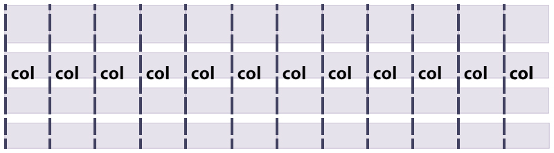

Грид-область
.grid-element {
grid-area: 2 / 3 / 4 / 4;
}
grid-row-startgrid-column-startgrid-row-endgrid-column-end

From the very beginning of CSS, there has been a giant,
layout-shaped hole at its center.
Огромное количество систем
построения разметки.
Эксперимент
Дженны Симмонс
<ul>
<li> </li>
<li> </li>
...
<li> </li>
</ul>
| IE10+, Edge | -ms имплементация отличается |
|---|---|
| Chrome, Canary |
chrome://flags/#enable-experimental-web-platform-features
|
| Opera |
opera://flags/#enable-experimental-web-platform-features
|
| Firefox |
about:config — layout.css.grid.enabled
|
| Safari | Safari Technology Preview |
.grid-container {
display: grid;
}
или
.grid-container {
display: inline-grid;
}
.grid-container {
display: grid;
grid-template-columns: 250px 1fr 100px;
grid-template-rows: 80px 80px 80px;
}
See the Pen CSS Grid Layout by Nataliya Karatkova on CodePen.
See the Pen CSS Grid Layout - 2 by Nataliya Karatkova on CodePen.
.grid-container {
display: grid;
grid-template-columns: 250px 1fr 100px;
grid-template-rows: repeat(10, 80px) 85px;
}
Доля оставшегося пространства
See the Pen CSS Grid Layout - fraction by Nataliya Karatkova on CodePen.
autopx, rem, em, vw и т. д.%frmax-content, min-content, minmax(min, max)
.grid-element {
grid-column-start: 3;
grid-column-end: 4;
grid-row-start: 2;
grid-row-end: 4;
}
See the Pen CSS Grid Layout - Simple by Nataliya Karatkova on CodePen.
.grid-element {
grid-column-start: 3;
grid-column-end: -1;
grid-row-start: 2;
grid-row-end: -1;
}
See the Pen CSS Grid Layout - Simple2 by Nataliya Karatkova (@meuwka) on CodePen.
.grid-element {
grid-column: 3 / 4;
grid-row: 2 / 4;
}
See the Pen CSS Grid Layout - Simple by Nataliya Karatkova on CodePen.
.grid-element {
grid-column: 3;
grid-row: 2 / span 2;
}
See the Pen CSS Grid Layout - Simple by Nataliya Karatkova on CodePen.
.grid-element {
grid-area: 2 / 3 / 4 / 4;
}
See the Pen CSS Grid Layout - Simple by Nataliya Karatkova on CodePen.
.grid-element {
grid-area: 2 / 3 / 4 / 4;
}
grid-row-startgrid-column-startgrid-row-endgrid-column-end
.grid-element {
grid-area: any-name;
}
grid-column-start |
grid-column-end |
grid-row-start |
grid-row-end |
grid-column
|
grid-row
|
||
grid-area |
|||
<body>
<header> ... </header>
<main> ... </main>
<footer> ... </footer>
</body>
body {
display: grid;
grid-template-rows: auto 1fr auto;
}
body {
display: grid;
grid-template-rows: auto 1fr auto;
grid-template-areas: "header"
"main"
"footer";
}
header {
grid-area: header;
}
main {
grid-area: main;
}
footer {
grid-area: footer;
}
See the Pen CSS Grid Layout - Layout by Nataliya Karatkova on CodePen.
See the Pen CSS Grid Layout - Layout by Nataliya Karatkova on CodePen.
@media (min-width: 768px) {
body {
grid-template-columns: 1fr 2fr;
grid-template-rows: 1fr auto;
grid-template-areas: "header main"
"footer main";
}
}
<div class="grid-container">
<div class="grid-element"></div>
<div class="grid-element"></div>
...
<div class="grid-element"></div>
</div>
.grid-container {
display: grid;
grid-template-columns: repeat(12, [col] 1fr);
}

.grid-element:nth-child(2) {
grid-column: col 4;
}
See the Pen CSS Grid Layout - Named Grid Lines by Nataliya Karatkova (@meuwka) on CodePen.
.grid-element:nth-child(13) {
grid-column: span 8;
}
See the Pen CSS Grid Layout - Named Grid Lines by Nataliya Karatkova (@meuwka) on CodePen.
.grid-element:nth-child(13) {
grid-column: span 8;
grid-row: span 2;
}
See the Pen CSS Grid Layout - Named Grid Lines by Nataliya Karatkova (@meuwka) on CodePen.
|
Грид-контейнер
|
Грид-элемент
|
|
Автоматические
|
Задаём вручную
|
display: subgrid;
Twitter: @meuwka
Facebook: Nataliya Karatkova